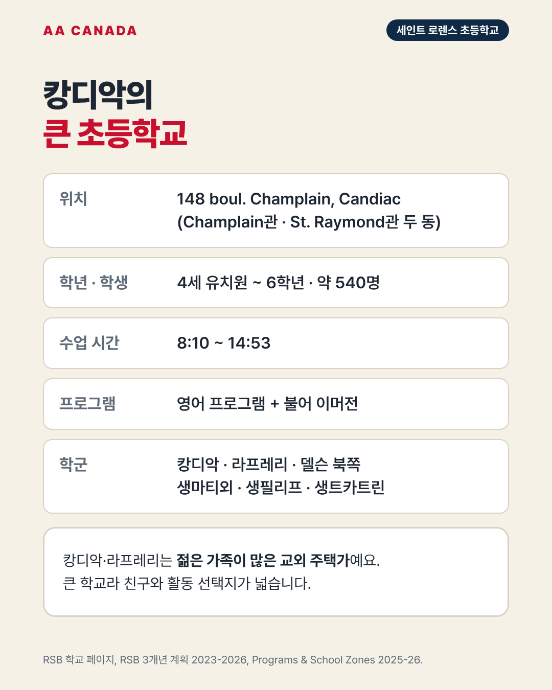

기준일 2026-10-21 · AA Canada 정리 교육청 공통 정보는 리버사이드 교육청 공통 안내를 보세요.
한 줄 요약: 캉디악의 큰 초등학교(약 540명). 건물 두 동에서 영어반과 불어 이머전 반을 운영하고, 4세 유치원도 있습니다.
| 항목 | 내용 |
|---|---|
| 주소 | 148 boul. Champlain, Candiac, QC J5R 3T2 (Champlain관·St. Raymond관, 148·150 Champlain) |
| 연락처 | 450-550-2500 |
| 학년 | 4세 유치원(K4)~6학년 |
| 학생 수 | 약 540명 |
| 교장 | Jean-René St-Cyr (교감 Stephanie Domes) |
| 수업 시간 | 8:10~14:53 |
| 프로그램 | 영어 프로그램 + 불어 이머전 |
| 학군 | 캉디악, 라프레리, 델슨 북쪽, 생마티외, 생필리프, 생트카트린 (이머전은 생콩스탕 일부 포함) |